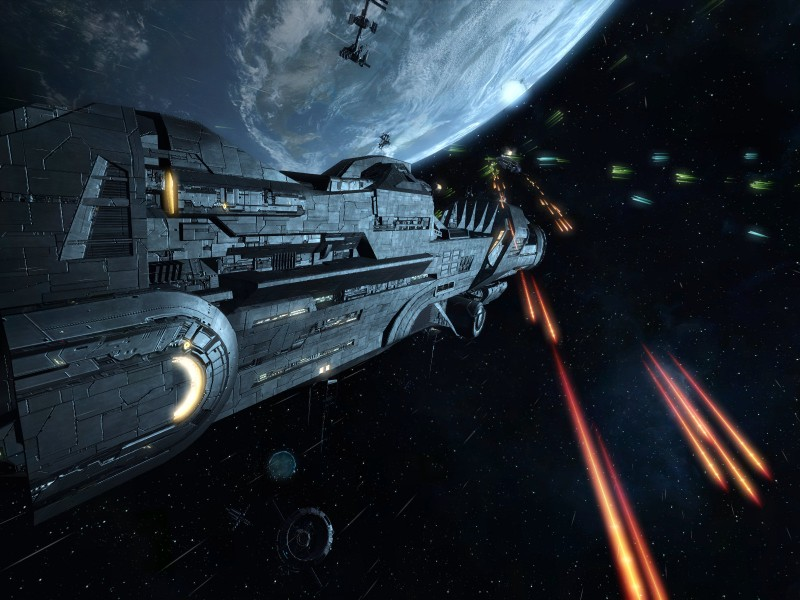
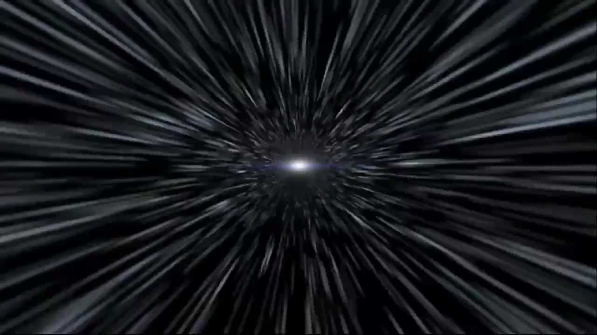

Asteroids
While you approach the asteroids, you realize that there are a lot more than you thought. All of different shapes and sizes, your spaceship can really damage from this. You look down at the control panel and see a weapons button (Maybe you can use this to destroy the asteroids!) but you weren't told how to use them so you may risk malfunctioning the spaceship. Maybe there's also a way to get through all of the asteroids without hitting the spaceship?


Which one do you think is the safest route?